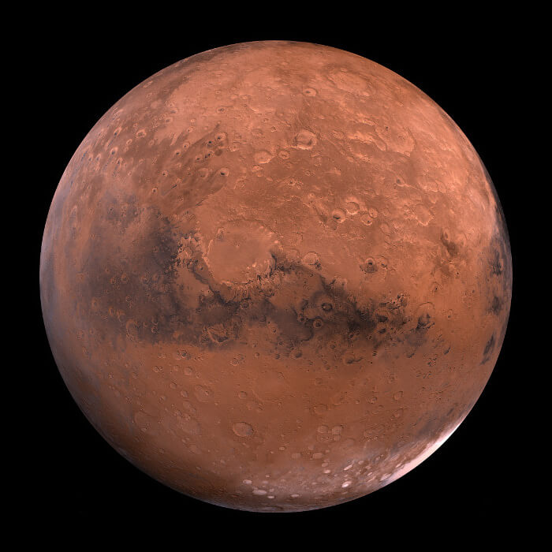
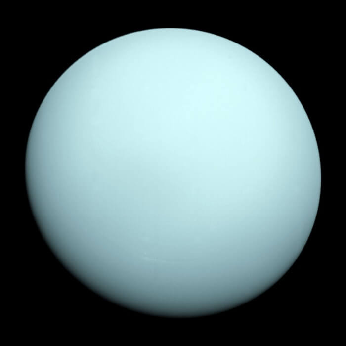
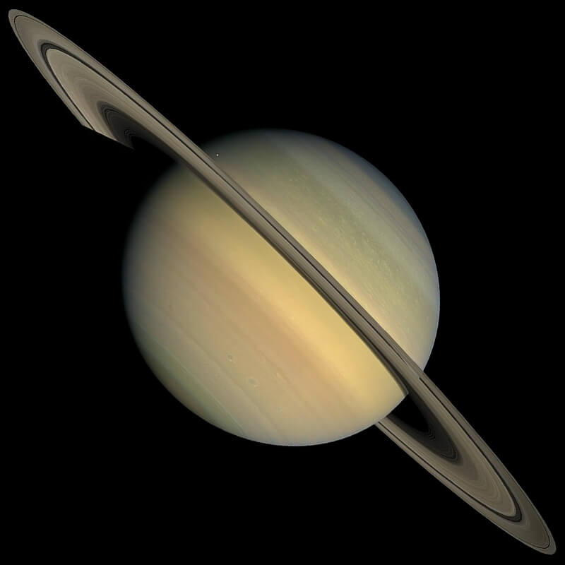
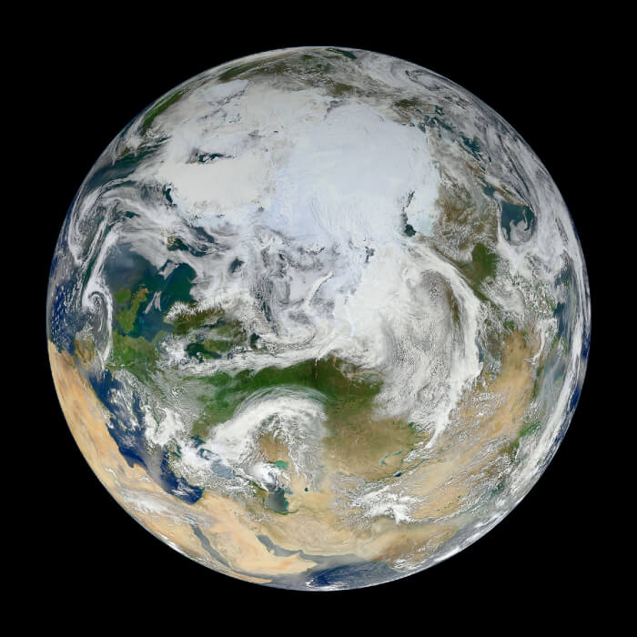
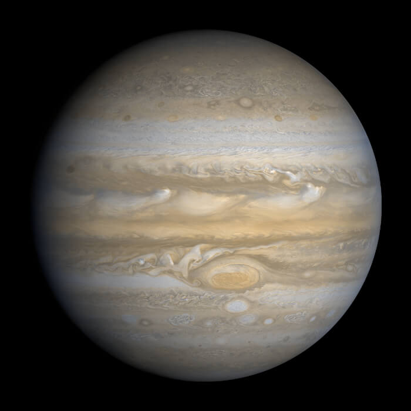
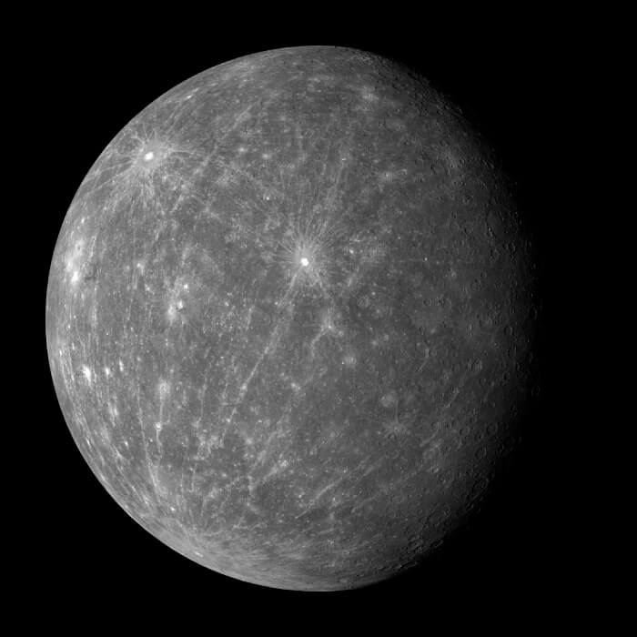
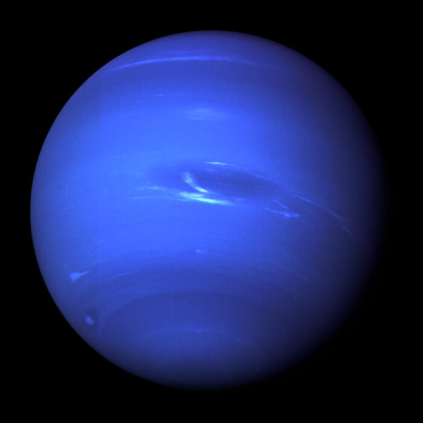
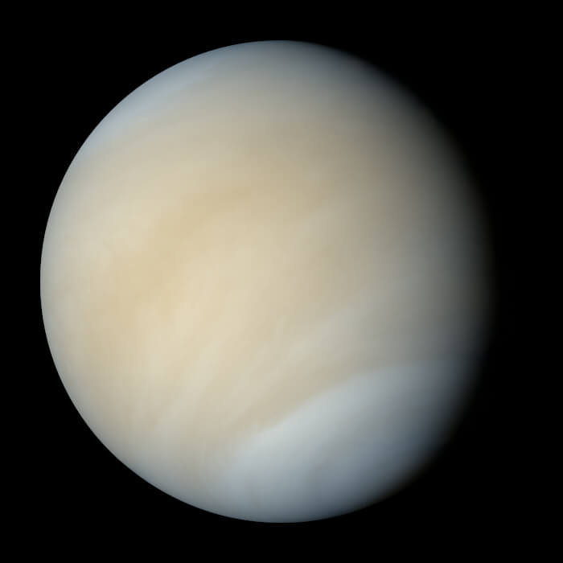

Kızıl Gezegen Mars
Olimpos Dağı'nın eteklerinde kızıl kum fırtınalarını güvenli fanus otellerimizden izleyin.
Öğrenci: 100₺Sivil: 250₺
Tarih: 12 Kasım 2026 · 18:30 · Akşam Yörüngesi

Olimpos Dağı'nın eteklerinde kızıl kum fırtınalarını güvenli fanus otellerimizden izleyin.
Öğrenci: 100₺Sivil: 250₺
Tarih: 12 Kasım 2026 · 18:30 · Akşam Yörüngesi

Soğuk rüzgarların ve mavi gölgelerin arasında sessiz ve hayal dolu bir yörünge yolculuğu.
Öğrenci: 100₺Sivil: 250₺
Tarih: 03 Aralık 2026 · 21:15 · Gece Yolculuğu

Buz ve kayadan oluşan efsanevi halkaların arasında romantik bir uzay yürüyüşü.
Öğrenci: 100₺Sivil: 250₺
Tarih: 28 Kasım 2026 · 20:00 · Halkalar Turu

Yeryüzü manzaralarını ve okyanus ışıklarını eşsiz bir uzay turuyla deneyimleyin.
Öğrenci: 100₺Sivil: 250₺
Tarih: 12 Ekim 2026 · 09:30 · Gün Doğumu Turu

Güçlü bulut şeritleri ve devasa fırtına alanları arasında büyük bir keşif turu.
Öğrenci: 100₺Sivil: 250₺
Tarih: 08 Aralık 2026 · 19:45 · Kızıl Fırtına

Güneş ışığı ve kayalık yüzeyler arasında görülmesi zor bir gezegen keşfi.
Öğrenci: 100₺Sivil: 250₺
Tarih: 18 Kasım 2026 · 07:00 · Şafak Keşfi

Uzaktan görülen mavi gölgesinin ardındaki derin soğuk ve rüzgarı hissedin.
Öğrenci: 100₺Sivil: 250₺
Tarih: 18 Aralık 2026 · 22:15 · Mavi Derinlik

Bulutlarla kaplı yüzeyi ve sıcak atmosferiyle en gizemli gezegenlerden biri.
Öğrenci: 100₺Sivil: 250₺
Tarih: 20 Ekim 2026 · 18:10 · Alacakaranlık Turu